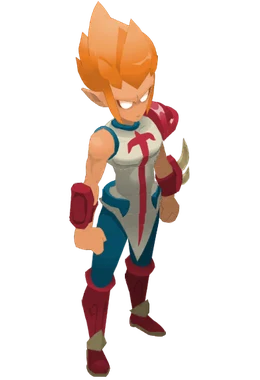
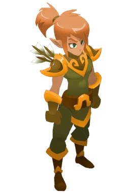
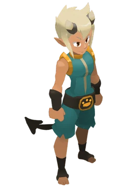
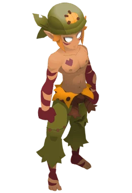
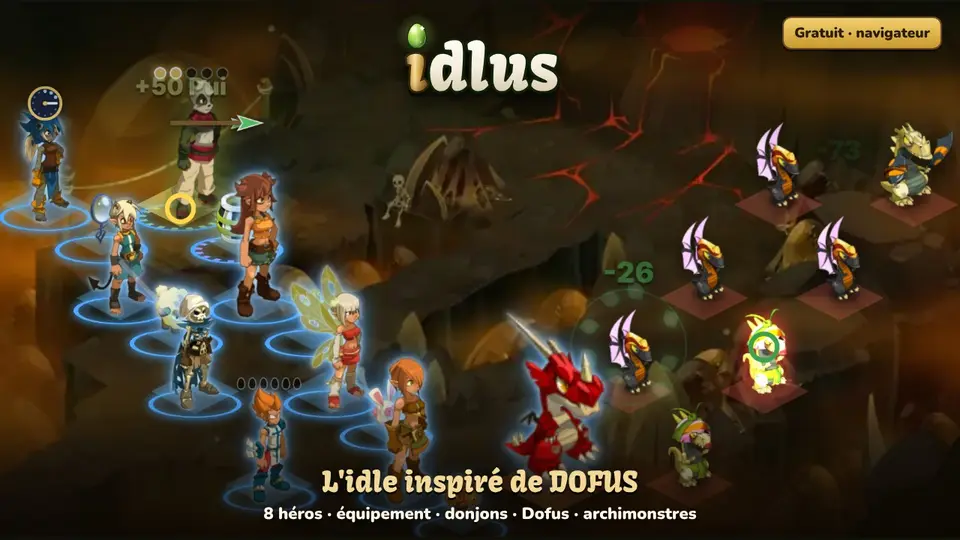
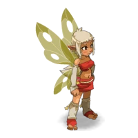

Pourquoi tu vas aimer Diablofus
Temps réelTu te déplaces, tu esquives d'un bond, tu enchaînes les coups. Pas de tour par tour.
Butin6 raretés et des pouvoirs légendaires qui changent tes sorts.
DonjonsDes vagues de monstres et des boss officiels du Monde des Douze.
Monde ouvertIncarnam, Astrub et Amakna : plus de 1 500 cartes à parcourir.
Choisis ta classe

IopGuerrier téméraireFonceur et sans reproche, il fait parler les armes au corps à corps.
CrâArcherFier et précis, il frappe de loin sans laisser de répit.
OsamodasInvocateur de créaturesDompteur né, il se bat entouré des créatures qu'il invoque.
SacrieurBerserkerPlus il prend de coups, plus il frappe fort. Toujours en première ligne.Les meilleurs aventuriers
Aussi chez Ombrelune
Idlus
L'idle aux 8 héros : ils combattent seuls pendant que tu fais autre chose. Donjons, Dofus, métiers, Kolizéum, 3 serveurs.
GratuitPC et téléphoneJoue même absent
Jouer à Idlus


Les nouveautés
Diablofus
- 11/11La 0.4 est ouverte : Amakna pour tous
- 10/11Un jeu plus fluide
- 09/11Incarnam à plusieurs
Idlus
- 2.2.14.17Changement de classe offert
- 2.2.14.16Top 2 des votes : Maîtrise ×2 aussi
- 2.2.14.15Maîtrise sans limite
Une seule communauté
Idées, entraide, annonces des deux jeux : tout se passe sur le Discord Ombrelune Studio.